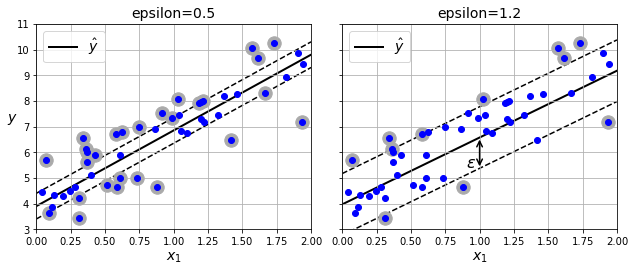
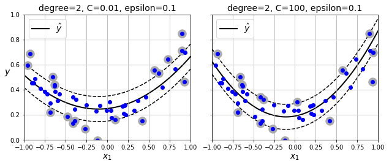

Section 2 — Training Linear Models & Support Vector Machines
Κανόνας πηγών: Το παρόν υλικό είναι απλή ελληνική επεξήγηση μόνο των ανεβασμένων αρχείων DAMA61 ΟΣΣ2, Géron Chapter 4/5, δύο notebooks και δύο απομαγνητοφωνήσεων. Οι τίτλοι και η ομαδοποίηση αποτελούν διδακτική ταξινόμηση της ίδιας ύλης. Δεν προστίθεται νέα θεωρία, νέο dataset ή πρωτότυπη άσκηση.
Ανάγνωση παραπομπών: Η «σελίδα PDF» είναι η θέση στο πραγματικό ανεβασμένο αρχείο. Το «κελί» στο .ipynb αριθμείται από 0, όπως βρίσκεται αποθηκευμένο στη σειρά cells. Οι απομαγνητοφωνήσεις δεν περιλαμβάνουν timestamps και τεκμηριώνονται με γραμμές.
Κώδικας: Παραθέτουμε μόνο πραγματικά αποσπάσματα notebook και εξηγούμε τη σύνδεσή τους με τα προηγούμενα κελιά. Δεν ισχυριζόμαστε νέα εκτέλεση. NOT EXECUTED (νέα εκτέλεση). Αποθηκευμένα outputs του πρωτοτύπου αναγνωρίζονται ρητά ως τέτοια.
Part 8 — Support Vector Regression και μελέτη των ασκήσεων
Μάθημα 22 — Support Vector Regression: η ζώνη ε γύρω από την πρόβλεψη
Προαπαιτούμενα από την υπάρχουσα ύλη: Μαθήματα 01–03 και 16–21.
Από την πηγή — τι διδάσκεται
Η Support Vector Regression, SVR, χρησιμοποιεί την οικογένεια των SVM για πρόβλεψη αριθμητικής τιμής αντί για απόφαση κατηγορίας. Η γεωμετρική εικόνα από το βιβλίο αντιστρέφεται: στην ταξινόμηση επιδιώκουμε να αφήνουμε τις κλάσεις έξω από τον δρόμο, ενώ στην παλινδρόμηση θέλουμε όσο γίνεται περισσότερες παρατηρήσεις να βρίσκονται μέσα σε μια ζώνη γύρω από την προβλεπόμενη καμπύλη.
Η υπερπαράμετρος epsilon ελέγχει τη ζώνη αποδεκτής απόκλισης. Το βιβλίο περιγράφει το SVR ως epsilon-insensitive, επειδή οι αποκλίσεις μέσα στη ζώνη δεν επιβαρύνουν τη συγκεκριμένη loss. Το σχήμα 5-10 συγκρίνει γραμμική SVR με epsilon 0.5 και 1.2. Για μη γραμμική SVR το βιβλίο παρουσιάζει την κλάση SVR με polynomial kernel.
Οπτική εξήγηση — πραγματικά σχήματα της πηγής

Αυθεντικό αποθηκευμένο διάγραμμα: 05_support_vector_machines(1).ipynb — κελί 37 (αρίθμηση από το 0). Αναπαράγεται από το υπάρχον output του notebook· NOT EXECUTED εδώ.
Πώς να το διαβάσεις: Στο σχήμα η εψιλον ζώνη γύρω από την πρόβλεψη επιτρέπει ορισμένη απόκλιση χωρίς ποινή. Μεγαλύτερο εψιλον σημαίνει μεγαλύτερο εύρος της ζώνης.

Αυθεντικό αποθηκευμένο διάγραμμα: 05_support_vector_machines(1).ipynb — κελί 39 (αρίθμηση από το 0). Αναπαράγεται από το υπάρχον output του notebook· NOT EXECUTED εδώ.
Πώς να το διαβάσεις: Εδώ η πηγή δείχνει πώς μια πολυωνυμική SVR αλλάζει την προσαρμογή στο υπάρχον ίδιο σύνολο σημείων.
Απλή επεξήγηση της ίδιας έννοιας
Η λέξη regression εδώ κρατά την ίδια σημασία με την αρχή της Section: η έξοδος είναι αριθμητική. Η διαφορά είναι ο τρόπος μέτρησης της απόκλισης και ο τρόπος κατασκευής του μοντέλου. Στο LinearSVR η προβλεπόμενη σχέση είναι γραμμική, ενώ στο SVR μπορούμε να χρησιμοποιήσουμε kernel.
Στην πραγματική διάλεξη υπάρχει προφορική περιγραφή για τα σημεία μέσα και έξω από τη ζώνη που δεν είναι πλήρως συνεπής. Για το τι σημαίνει epsilon-insensitive ακολουθούμε τη σαφή διατύπωση του Chapter 5: τα σημεία μέσα στο epsilon περιθώριο δεν προσθέτουν σφάλμα σε αυτή τη loss.
Καθοδηγούμενη εξήγηση — ακολουθούμε αργά την ίδια πηγή
Στην SVM ταξινόμηση ο δρόμος ήταν το κενό που αφήνουμε ανάμεσα στις κατηγορίες. Στην SVR η ίδια γεωμετρική εικόνα αποκτά άλλη χρήση: θέλουμε όσο γίνεται περισσότερα δείγματα να βρίσκονται μέσα σε μια ζώνη γύρω από την πρόβλεψη. Η παράμετρος έψιλον ελέγχει την ανοχή αυτής της ζώνης.
Το βιβλίο ονομάζει τη συμπεριφορά epsilon-insensitive επειδή μια απόκλιση που βρίσκεται μέσα στην επιτρεπτή ζώνη δεν τιμωρείται από τη συγκεκριμένη συνάρτηση κόστους. Αν η απόλυτη διαφορά της πρόβλεψης από την πραγματική τιμή δεν ξεπερνά το έψιλον, το σημείο είναι μέσα στη ζώνη. Το σχήμα 5-10 συγκρίνει τις δύο δοσμένες τιμές epsilon, 0.5 και 1.2.
Το notebook χρησιμοποιεί LinearSVR(epsilon=0.5) για το γραμμικό παράδειγμα και SVR(kernel="poly", degree=2, C=0.01, epsilon=0.1) για το μη γραμμικό. Οι τιμές είναι της πηγής και δεν αντιστοιχούν σε νέο υποθετικό πρόβλημα.
Οι τύποι της πηγής και τι σημαίνουν
Προφορική ανάγνωση και επεξήγηση: Η απόλυτη διαφορά της πρόβλεψης από την πραγματική τιμή είναι μικρότερη ή ίση με έψιλον για ένα σημείο που βρίσκεται μέσα στη ζώνη αποδεκτής απόκλισης.
Αριθμητικό παράδειγμα ή εφαρμογή — αποκλειστικά από την πηγή
Πραγματικό notebook: Δημιουργούνται 50 παραδείγματα από y=4+3*X+noise. Το LinearSVR(epsilon=0.5, dual=True,random_state=42) εκπαιδεύεται μετά από StandardScaler. Το κελί 38 δείχνει SVR(kernel="poly", degree=2, C=0.01, epsilon=0.1) σε μη γραμμικό dataset.
Βασική Python από το πραγματικό notebook
Πριν από τον κώδικα: Η διαδικασία και η σειρά των εντολών έχουν οριστεί από τα συγκεκριμένα κελιά του δοσμένου notebook. Δεν δημιουργούμε νέα υλοποίηση.
Ακριβές απόσπασμα του παρεχόμενου 05_support_vector_machines(1).ipynb, κελί 36 (αρίθμηση από 0):
from sklearn.svm import LinearSVR
# extra code – these 3 lines generate a simple linear dataset
np.random.seed(42)
X = 2 * np.random.rand(50, 1)
y = 4 + 3 * X[:, 0] + np.random.randn(50)
svm_reg = make_pipeline(StandardScaler(),
LinearSVR(epsilon=0.5, dual=True, random_state=42))
svm_reg.fit(X, y)Ακριβές απόσπασμα του παρεχόμενου 05_support_vector_machines(1).ipynb, κελί 38 (αρίθμηση από 0):
from sklearn.svm import SVR
# extra code – these 3 lines generate a simple quadratic dataset
np.random.seed(42)
X = 2 * np.random.rand(50, 1) - 1
y = 0.2 + 0.1 * X[:, 0] + 0.5 * X[:, 0] ** 2 + np.random.randn(50) / 10
svm_poly_reg = make_pipeline(StandardScaler(),
SVR(kernel="poly", degree=2, C=0.01, epsilon=0.1))
svm_poly_reg.fit(X, y)Επεξήγηση των πραγματικών βημάτων: Κελί 36: εισάγει LinearSVR, δημιουργεί 50 δεδομένα με seed 42, ορίζει pipeline scaling και LinearSVR, κάνει fit. Κελί 38: εισάγει SVR, δημιουργεί polynomial kernel δεύτερου βαθμού, ορίζει C και epsilon της πηγής και εκπαιδεύει. Δεν αλλάζουν αριθμοί ή API.
Εκτέλεση: NOT EXECUTED εδώ· οποιαδήποτε αριθμητική έξοδος παραπάνω είναι αποθηκευμένη στο πρωτότυπο notebook.
Διαβάζουμε τον πραγματικό κώδικα γραμμή προς γραμμή
Οι παρακάτω παρατηρήσεις εξηγούν μόνο τις εντολές που υπάρχουν ήδη στα παρατιθέμενα αποσπάσματα. Δεν αποτελούν νέο πρόγραμμα. Για την ακριβή προέλευση κάθε block χρησιμοποιούμε τις ήδη σημειωμένες παραπομπές notebook/κελιού του μαθήματος. Νέα εκτέλεση: NOT EXECUTED.
Απόσπασμα 1, στη σειρά της πηγής: - from sklearn.svm import LinearSVR — Φέρνει στον κώδικα τη βιβλιοθήκη, τη συνάρτηση ή την κλάση που χρησιμοποιείται ήδη σε αυτό το δοσμένο παράδειγμα. - # extra code – these 3 lines generate a simple linear dataset — Σχόλιο που υπάρχει στον πρωτότυπο κώδικα και εξηγεί το συγκεκριμένο βήμα. - np.random.seed(42) — Ορίζει τη σταθερή αρχική κατάσταση τυχαιότητας για αναπαραγωγιμότητα του συγκεκριμένου παραδείγματος. - X = 2 * np.random.rand(50, 1) — Δημιουργεί τις συγκεκριμένες τυχαίες τιμές εισόδου ακριβώς όπως τις ορίζει η πηγή. - y = 4 + 3 * X[:, 0] + np.random.randn(50) — Ορίζει τις πραγματικές εξόδους αυτού του παραδείγματος από την υπάρχουσα σχέση, μαζί με τον θόρυβο της πηγής. - svm_reg = make_pipeline(StandardScaler(), — Συνδέει τα επιμέρους βήματα στην ακριβή σειρά με την οποία τα εκτελεί η πηγή. - LinearSVR(epsilon=0.5, dual=True, random_state=42)) — Ορίζει το γραμμικό μοντέλο SVR, με την epsilon και τις υπόλοιπες ρυθμίσεις της πηγής. - svm_reg.fit(X, y) — Εκπαιδεύει το ήδη ορισμένο μοντέλο στα συγκεκριμένα χαρακτηριστικά και τις γνωστές εξόδους. Απόσπασμα 2, στη σειρά της πηγής: - from sklearn.svm import SVR — Φέρνει στον κώδικα τη βιβλιοθήκη, τη συνάρτηση ή την κλάση που χρησιμοποιείται ήδη σε αυτό το δοσμένο παράδειγμα. - # extra code – these 3 lines generate a simple quadratic dataset — Σχόλιο που υπάρχει στον πρωτότυπο κώδικα και εξηγεί το συγκεκριμένο βήμα. - np.random.seed(42) — Ορίζει τη σταθερή αρχική κατάσταση τυχαιότητας για αναπαραγωγιμότητα του συγκεκριμένου παραδείγματος. - X = 2 * np.random.rand(50, 1) - 1 — Δημιουργεί τις συγκεκριμένες τυχαίες τιμές εισόδου ακριβώς όπως τις ορίζει η πηγή. - y = 0.2 + 0.1 * X[:, 0] + 0.5 * X[:, 0] ** 2 + np.random.randn(50) / 10 — Ορίζει τις πραγματικές εξόδους αυτού του παραδείγματος από την υπάρχουσα σχέση, μαζί με τον θόρυβο της πηγής. - svm_poly_reg = make_pipeline(StandardScaler(), — Συνδέει τα επιμέρους βήματα στην ακριβή σειρά με την οποία τα εκτελεί η πηγή. - SVR(kernel="poly", degree=2, C=0.01, epsilon=0.1)) — Ορίζει το μοντέλο SVM regression με τον kernel και το epsilon του δοσμένου παραδείγματος. - svm_poly_reg.fit(X, y) — Εκπαιδεύει το ήδη ορισμένο μοντέλο στα συγκεκριμένα χαρακτηριστικά και τις γνωστές εξόδους.
Περιορισμοί και προσοχή
Το SVR με kernel μπορεί να γίνει αργό σε πολύ μεγάλα training sets, όπως εξηγεί ο Géron. Δεν επινοούμε νέα εφαρμογή χρονοσειράς πέρα από τις σχετικές προφορικές αναφορές.
Τι κρατώ από το υπάρχον μάθημα
SVR = regression με ζώνη epsilon· LinearSVR για γραμμική σχέση· SVR με kernel για μη γραμμική.
Μάθημα 23 — Πώς μελετάμε τις πραγματικές ασκήσεις των δύο κεφαλαίων
Προαπαιτούμενα από την υπάρχουσα ύλη: Μαθήματα 01–22.
Πρόσθετη πραγματική πηγή ασκήσεων: Η εργασία KITSAKIS_DAMA61_2026_WA2.ipynb περιλαμβάνει 12 ήδη διατυπωμένα ερωτήματα: 6 για Wine/Softmax/Logistic Regression/SVM και 6 για SML2010/LASSO/Ridge/Elastic Net. Έχουν μεταφερθεί χωρίς νέα εκφώνηση στο excercises.md. Το sml2010.zip έχει ήδη δοθεί. Η shifted_log στο Πρόβλημα 2, ερώτημα 2 δεν έχει ολοκληρωθεί στο υπάρχον notebook. Πηγή: KITSAKIS_DAMA61_2026_WA2.ipynb, κελιά 2–51 (0-based).
Από την πηγή — τι διδάσκεται
Η Section 2 έχει πραγματικές ασκήσεις από τον Géron και αντίστοιχες λύσεις στα δύο notebooks. Το Chapter 4 περιλαμβάνει έντεκα ερωτήσεις εννοιών και μία εκτεταμένη προγραμματιστική άσκηση: Softmax Regression με Batch Gradient Descent και Early Stopping χρησιμοποιώντας NumPy, χωρίς τη χρήση Scikit-Learn για τον αλγόριθμο. Το Chapter 5 περιλαμβάνει οκτώ ερωτήσεις εννοιών και τρεις εφαρμογές σε πραγματικά datasets: σύγκριση τριών SVM ταξινομητών, ταξινόμηση Wine και παλινδρόμηση California Housing.
Τα notebooks περιέχουν έτοιμη καταγραφή των λύσεων. Η άσκηση Wine χρησιμοποιεί load_wine, διαχωρισμό train/test, κλιμάκωση, σύγκριση LinearSVC με SVC και έλεγχο υπερπαραμέτρων. Η άσκηση California Housing χρησιμοποιεί fetch_california_housing, train/test, LinearSVR, SVR, κλιμάκωση και RMSE. Στο Chapter 4, η άσκηση 12 περιλαμβάνει one-hot στόχους, εκπαίδευση με NumPy, κανονικοποίηση και validation-based stopping.
Οπτική εξήγηση — πραγματικά σχήματα της πηγής

Αυθεντικό αποθηκευμένο διάγραμμα: KITSAKIS_DAMA61_2026_WA2.ipynb — κελί 9 (αρίθμηση από το 0). Αναπαράγεται από το υπάρχον output του notebook· NOT EXECUTED εδώ.
Πώς να το διαβάσεις: Η καμπύλη training–validation της υπαρκτής WA2 είναι παράδειγμα προς μελέτη, όχι νέα άσκηση. Παρατηρούμε πού επιλέχθηκε η καλύτερη εποχή με βάση το validation loss.
Απλή επεξήγηση της ίδιας έννοιας
Ο σκοπός αυτού του μαθήματος δεν είναι να κατασκευάσουμε νέα εξέταση. Πρώτα εντοπίζουμε το πραγματικό ζητούμενο και τη σχετική έννοια του βιβλίου. Έπειτα διαβάζουμε την αντίστοιχη πραγματική λύση του notebook. Δεν αλλάζουμε τα datasets, δεν προσθέτουμε δικές μας ερωτήσεις και δεν παρουσιάζουμε τα παλιά αποθηκευμένα outputs σαν να είναι αποτελέσματα νέας εκτέλεσης.
Η απομαγνητοφώνηση αναφέρει εργασία και datasets. Επειδή όμως η πλήρης εκφώνηση της συγκεκριμένης εργασίας δεν έχει δοθεί, οι αναφορές αυτές δεν υποκαθιστούν την εκφώνηση και δεν δημιουργούμε λύση εργασίας με εικασίες.
Καθοδηγούμενη εξήγηση — ακολουθούμε αργά την ίδια πηγή
Η τελευταία ενότητα δεν προσθέτει δικό μας διαγώνισμα. Στο Chapter 4 υπάρχουν δώδεκα πραγματικές ασκήσεις και στο Chapter 5 έντεκα. Τα notebooks περιέχουν ήδη απαντήσεις και, για τις προγραμματιστικές ασκήσεις, κελιά με την υπάρχουσα υλοποίηση. Γι’ αυτό η μελέτη τους γίνεται με βάση τη διατύπωση της κάθε πηγής και τα συγκεκριμένα κελιά.
Στην άσκηση 12 του Chapter 4 η πηγή συνδυάζει Softmax, Batch Gradient Descent, κανονικοποίηση και Early Stopping πάνω στο Iris. Στις ασκήσεις 9, 10 και 11 του Chapter 5 υπάρχουν αντίστοιχα σύγκριση SVM ταξινομητών στο Iris, ταξινόμηση Wine και SVR στο California Housing. Η σειρά του κώδικα, τα δεδομένα και τα αποθηκευμένα αποτελέσματα παραμένουν του αρχικού notebook.
Δεν συμπεραίνουμε εξεταστική πιθανότητα από το ότι μια άσκηση υπάρχει στο βιβλίο. Δεν έχει δοθεί επίσημη βαθμολογική κατανομή ούτε επαληθευμένο παλιό θέμα. Σκοπός εδώ είναι να διαβάσουμε και να κατανοήσουμε τις πραγματικές λύσεις.
Αριθμητικό παράδειγμα ή εφαρμογή — αποκλειστικά από την πηγή
Πηγή ασκήσεων: G4, σελ. 32–33, ασκήσεις 1–12· G5, σελ. 13, ασκήσεις 1–11· οι αντίστοιχες λύσεις βρίσκονται στα κεφάλαια Exercise solutions των N4 και N5. Η αναλυτική καταγραφή και οι διαθέσιμες λύσεις μεταφέρονται στο χωριστό MDs/section2/excercises.md.
Περιορισμοί και προσοχή
Δεν υπάρχουν επιβεβαιωμένα παλαιά θέματα εξετάσεων, ούτε αυθεντική εκφώνηση της συζητούμενης εργασίας, ούτε ακριβείς timestamps ηχητικών. Όπου η λύση βασίζεται σε πλήρες notebook και εξωτερική λήψη dataset, τα αποθηκευμένα αποτελέσματα διακρίνονται από νέα εκτέλεση.
Τι κρατώ από το υπάρχον μάθημα
Εξασκούμαστε μόνο με τις 23 πραγματικές ασκήσεις των Chapter 4 και 5. Δεν δημιουργούμε πρωτότυπα θέματα.